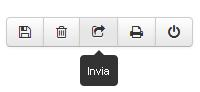
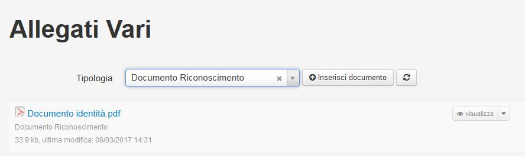

7. Partecipazione alla Selezione¶
Effettuato l'accesso, per poter partecipare alla selezione, il candidato dovrà utilizzare il menù a tendina
posto alla destra del bando di interesse; il menù presenta la seguente scelta:
"Allegati" consente di visualizzare, ed eventualmente scaricare, tutti gli allegati del bando (il testo del bando, gli eventuali allegati e i successivi provvedimenti), "Presenta domanda" apre la pagina per la compilazione della domanda di partecipazione al bando prescelto. Nel caso di "Selezioni per dipendenti CNR" ci possono essere bandi ove è richiesta la scelta di un particolare profilo o di una determinata area/settore; pertanto si dovrà premere sull'opzione "Dettagli" prima di visualizzare le tipologie disponibili alla candidatura e quindi della voce "Presenta domanda"
7.1. Compilazione domanda¶
La compilazione della domanda è divisa in diverse sezioni contenenti dati omogenei; tali sezioni sono sempre visibile sul lato sinistro ed, oltre ad elencare le informazioni richieste dal bando, mediante la loro selezione facilitano la navigazione nella domanda stessa. Il sistema controlla la coerenza del Codice Fiscale con le altre informazioni inserite e, dove è possibile, propone le informazioni inserite alla registrazione. Tra le altre informazioni, in particolare, per i candidati di cittadinanza italiana sarà richiesto il codice fiscale
mentre per quelli di cittadinanza straniera sarà richiesta la Nazione della cittadinanza.

Per i dipendenti CNR, alla prima apertura della domanda, vengono proposte le informazioni registrate nel sistema del personale SIPER; tali informazioni possono essere comunque modificate dal candidato. Nell’esempio sopra riportato si può notare che l’applicazione, al momento della validazione, evidenzia in rosso i campi obbligatori e la modalità è analoga su tutte le sezioni da compilare.
7.1.1. Dati Anagrafici¶

7.1.2. Dati Residenza¶
Le sezioni visibili saranno diverse a seconda di ciò che richiede il bando. Allo stesso modo, anche per le dichiarazioni sostitutive, i bandi potranno prevedere diverse alternative: generalmente è prevista una sezione specifica "Dichiarazioni" dove alcune ammissioni dovranno essere confermate semplicemente cliccando sul "SI", altre dichiarazioni dovranno essere rilasciate tramite un modulo da firmare ed allegare nella sezione "Allegati Vari" utilizzando la tipologia "Modulo dichiarazioni sostitutive". Il "Modulo dichiarazioni sostitutive" potrà essere reperibile tra gli allegati del bando stesso oppure, se visibile, nella sezione "Stampa Modulo Dichiarazioni Sostitutive da firmare e allegare"

Nella figura sottostante si illustra come la procedura consente, utilizzando l’apposito bottone, di stampare il modulo concernente le dichiarazioni sostitutive di certificazione e dell’atto di notorietà, già precompilato, che il candidato dovrà firmare (firma autografa) ed allegare al bando nella sezione "Allegati vari" utilizzando la tipologia "Modulo Dichiarazioni Sostitutive" dopo averlo scansionato.
7.1.3. Azioni¶
Durante la compilazione della domanda sono attivi una serie di bottoni ad icone di seguito descritti:

|
Consente di effettuare salvataggi intermedi dei dati inseriti nella domanda, che rimane sempre in stato PROVVISORIA finchè non si effettua l’invio della stessa. |

|
Consente di eliminare TUTTA la domanda (per eliminare i singoli elementi della domanda vanno utilizzati i menù a tendina posizionati a destra delle singole righe di dettaglio). Il sistema, alla richiesta di cancellazione, presenta una richiesta di ulteriore conferma poichè, si ricorda che una volta cancellata l’intera domanda, non è più possibile recuperarla. |
|  | Consente di inviare la domanda quando è stata completata. L’INVIO della domanda la pone in stato DEFINITIVA e produce la stampa con timbro digitale che viene inviata all’indirizzo email del candidato. Si ricorda che è sempre possibile riaprire la domanda già inviata e definitiva se sono ancora aperti i termini del bando. |

|
Consente di effettuare la stampa della domanda. |
| Consente di uscire dalla compilazione della domanda. |
7.1.4. Allegati Vari¶

Cliccando sulla Tipologia appare l’elenco degli allegati così come richiesti dal bando. Solo dopo avere selezionato il tipo di allegato che si vuole inserire verrà attivato il bottone Inserisci documento. Per alcune tipologie è prevista la possibilità di inserire un solo documento; in questi casi nella maschera di inserimento apparirà il seguente messaggio:
Errore
Attenzione! É possibile inserire un solo elemento avente questa Tipologia. Il Sistema non consentirà l'invio di domande contenti più elementi.
Nel caso del documento di riconoscimento è necessario inserire anche i riferimenti del medesimo:

Alla fine dell’inserimento, appare il messaggio di conferma che l’operazione è andata a buon fine.
Importante
Allegato inserito correttamente.
Non è possibile inserire allegati di tipologie diverse rispetto a quelle richieste dal obbligatoriamente bando.
7.1.5. Funzionamento del campo Tipologia¶
Così come indicato anche nella casella di messaggio che appare passando il mouse sul campo, quando il campo tipologia è vuoto vengono visualizzati tutti i dettagli inseriti, quando è valorizzato vengono visualizzati solo i dettagli della tipologia selezionata.
Selezionata tipologia "Documento di Riconoscimento"
7.2. Pagamento diritti di Segreteria¶
In alcuni casi, dove previsto, è necessario il pagamento dei diritti di segreteria per partecipare alla selezione, in questo caso il pagamento deve essere effettuato tramite la piattaforma pagoPA, è possibile scaricare l'avviso oppure procedere direttamente al pagamento attraverso il portale pagoPA.

Successivamente al pagamento la piattaforma resta in attesa della notifica, la quale viene caricata nella domanda come ricevuta di pagamento, qualora ciò non avenisse entro la scadenza del bando, è sempre possibile caricare la ricevuta manualmente.
7.3. Stampa Domanda¶
La stampa della domanda può essere effettuata utilizzando l’apposito bottone
attivo durante la compilazione della domanda, oppure utilizzando nella sezione "Le mie domande" il menù a tendina che si attiva accanto a ciascuna domanda
Fino a quando la domanda non sarà inviata, la stampa risulterà provvisoria e, così come quella definitiva, l’ultima stampa provvisoria richiesta dal candidato verrà archiviata automaticamente dal sistema in modo tale che il candidato stesso, al momento di effettuare la stampa, potrà scegliere se visualizzare l’ultima stampa provvisoria già archiviata oppure richiederne una nuova. Più precisamente, alla prima richiesta di stampa, il sistema fornirà al candidato il seguente messaggio
Attenzione
La stampa richiesta sarà accodata e, al termine della sua esecuzione, il sistema invierà una e-mail con la stampa allegata.
e, come descritto nel messaggio stesso, al termine dell’esecuzione della stampa verrà inviata una e-mail al candidato con la stampa effettuata. Se, invece, è stata già effettuata in precedenza una stampa provvisoria, il sistema chiederà al candidato se desidera visualizzare la versione della stampa già archiviata oppure se desidera richiederne una nuova:

Nel caso in cui viene chiesta la visualizzazione della stampa già archiviata, il sistema non elaborerà una nuova stampa e visualizzerà l’ultima stampa provvisoria eseguita dal candidato. Nel caso in cui viene richiesta una nuova stampa, al termine della esecuzione della stessa, il candidato riceverà una mail con la stampa allegata. La nuova stampa richiesta sarà aggiornata al momento in cui viene eseguita. Dopo l’invio della domanda, sarà solo possibile visualizzare la stampa definitiva archiviata
7.4. Invio domanda¶
| Solo quando tutte le sezioni saranno completate, il candidato potrà procedere all’invio definitivo utilizzando l’apposito bottone "invia" |
| Prima di inviare la domanda, si consiglia di effettuare la stampa della stessa utilizzando il bottone "stampa" |
|
in modo da effettuare ulteriori verifiche. |
In questa fase, il sistema effettuerà tutti i controlli necessari; in particolare, nel caso in cui il bando preveda la presentazione per uno stesso candidato di un numero massimo di domande (ad esempio per più profili oppure per più Istituti), il sistema non consentirà l’invio di un numero di domande maggiore a quello consentito, restituendo il seguente messaggio:
Errore
Risultano già inviate il numero massimo di domande previste per il bando. Operazione non possibile!
Terminati tutti i controlli, prima di procedere all’invio della domanda, la procedura chiederà conferma al candidato:
Solo dopo la risposta affermativa da parte del candidato, la domanda di partecipazione al concorso sarà definitivamente inviata e, a meno di riapertura della stessa da parte del candidato, non sarà più possibile modificarla. Sarà possibile visualizzare la stampa della stessa come ricevuta dell’invio direttamente dalla procedura on-line nell’area "Le mie domande".

Contemporaneamente il sistema invierà, all’indirizzo mail del candidato (per i dipendenti all’indirizzo mail istituzionale, per tutti gli altri all’indirizzo mail fornito dal candidato alla registrazione), una mail con allegata la stampa della domanda.
In questa fase, il candidato per poter stampare o visualizzare i dettagli della propria domanda dovrà accedere all’area "Le mie domande" descritta nel manuale utente ed utilizzare tutte le funzionalità previste dal menù a tendina posto alla destra di ciascuna domanda.
7.5. Integrazione/rettifica domanda¶
Una volta che la domanda è in stato "inviata" e fino alla scadenza del bando sarà possibile effettuare delle integrazioni e/o rettifiche alla stessa utilizzando la scelta "Riapri Domanda" nel menù a tendina posto nell’area "Le mie domande".
In questo caso la domanda ritornerà in stato "provvisoria" e sarà possibile apportare tutte le modifiche ed integrazioni necessarie per poi procedere nuovamente all’invio della stessa.
Prima di procedere alla riapertura, il sistema chiederà al candidato di confermare la dichiarazione di essere consapevole che, con la riapertura della domanda, la stessa si intenderà come mai inviata e che quindi, in caso di mancato successivo invio, la stessa non sarà considerata valida ai fini della selezione. Solo dopo tale conferma sarà possibile procedere alle modifiche da apportare.